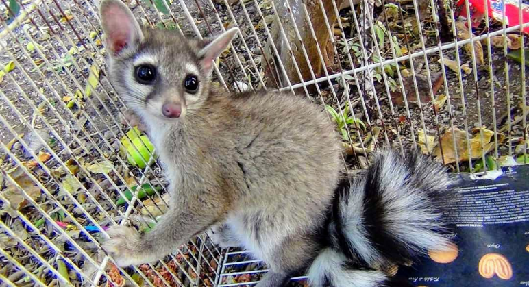

Gallery


Is a mammal of the raccoon family (Procyonidae) native to arid regions of North America and is also know as "cacomixtle".
Cacomixtle comes from the Nahuatl and it can be transalated as "half feline"
Comixtles are omnivorous, wich means they are able to survive on both
animal and vegtal matter.
They eat small vertebrates, berries and insects.
|
|
|
 |